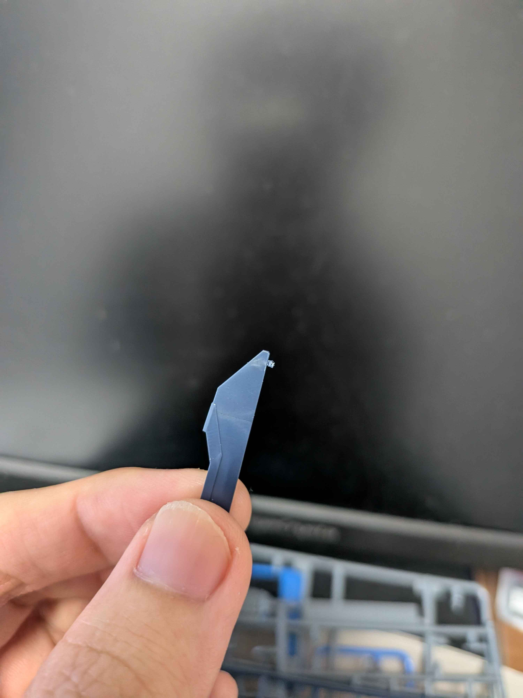
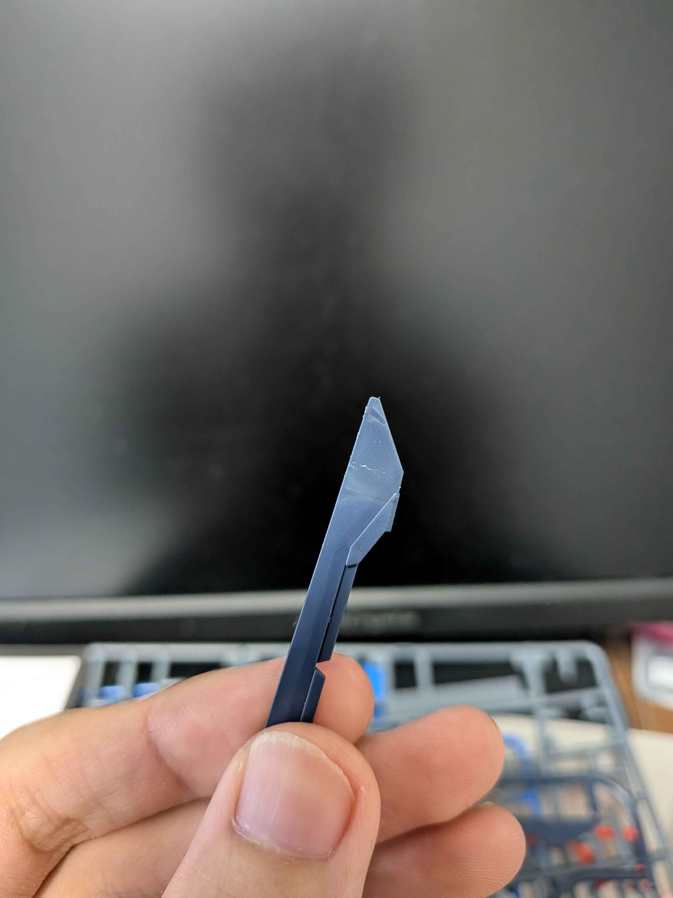

素組の極意とは
ガンプラにおける「素組（すぐみ）」とは、塗装や大きな改造を行わず、キット本来の成型色と付属のシールのみで組み立てる手法を指します。ただ説明書通りに組むだけではなく、丁寧なパーツ切り出しと組み立てを行うことで、塗装なしでも見違えるほどのクオリティに仕上げることができます。
■ 本ページの目次（各極意へジャンプします）
■ 素組を極めるための3大要素
- 極薄の2度切り：パーツに負荷をかけずにゲートを残さずカットする技術。
- 丁寧なゲート処理：デザインナイフやヤスリを駆使して断面を平滑にする。
- パーツの完全密着：パーツ同士の隙間をなくし、カッチリと噛み合わせる。
実践！2度切りの手順
2度切りは素組ビルドにおいて最も基本的であり、最も強力なゲート跡隠蔽技術です。一度にランナーからパーツを切り離そうとすると、プラスチックが引っ張られて「白化（プラスチックが白く変色する現象）」を引き起こします。

1. ランナーから余裕を持って切り離す
まずはパーツのギリギリではなく、ゲートを1〜2mmほど残して太刃ニッパーでランナーから切り離します。これにより、パーツ自体に無理な圧力が直接加わるのを防ぎます。

2. 残したゲートを薄刃ニッパーで2度切りする
次に、残ったゲートをパーツの表面と平ら（ツライチ）になるように、高級な薄刃ニッパーを使って慎重にカットします。力を入れず、ニッパーの刃の切れ味だけでスッと落とすのがコツです。
徹底！デザインナイフによるゲート処理
ニッパーによる2度切りだけでも綺麗になりますが、わずかに残ったゲートの「削り残し」や「バリ」はデザインナイフで綺麗に処理します。
デザインナイフを扱う際は、刃を寝かせ、パーツの面に合わせてカンナをかけるように薄く少しずつ削ぎ落としていきます。一度に深く削ろうとすると、パーツ自体をえぐってしまう原因（えぐれ傷）になるため注意が必要です。刃先は常に新品の鋭い状態を保つよう、こまめに刃を交換しましょう。
追求！パーツの完全密着と白化対策
どれだけパーツが綺麗に切り出せても、組み立ての段階でしっかりとパーツ同士が噛み合っていなければ、隙間（目地）ができてしまい玩具っぽさが残ってしまいます。ダボ（接続軸）がきつい場合は、斜めにニッパーでカットを入れるなどしてスムーズにハマるよう調整を行います。
万が一、パーツの切り口が白化してしまった場合は、爪の先で少しこすったり、ガンダムマーカーの同系色をほんの少し塗ってすぐに指でぼかすことで、素組の状態でも目立たなくさせることが可能です。
最終更新日：